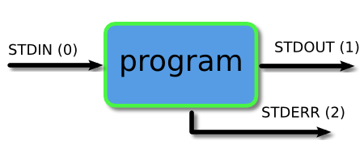

Command-line tools
Preamble
Shell, terminal and console
Every Operating System (Linux, MacOS, Windows, …) comes with a program able to interpret and run command lines.
The shell is the program that processes commands and returns output, e.g., Bash, zsh, etc…
A terminal refers to a wrapper program that runs a shell.
The console is a special sort of terminal (low-level).
Reference: super user: shell, console and terminal
Prompt
As you already know, the bash prompt is a $ sign when you are a standard user. When you are an administrator (often called root user) the prompt is a #.
The Unix directory structure
Reference: The Linux Directory Structure, Explained, by Chris Hoffman.
Some aliases:
~is an alias to your home directory..is an alias to the current directory...is an alias to the parent directory.
For instance,
$ cd ~
$ pwd
$ cd ../../home/../etc/../home/
$ pwdGetting help
To get some help on a command, please use the man command. You may also use the --help option as in
$ man ls
$ ls --helpPaging programs
A paging program displays, one windowful at a time, the contents of a file on a terminal. It pauses after each windowful and prints on the window status line, the screen, the file name, the current line number, and the percentage of the file so far displayed. This is not an editor (no modification of the file can be done).
more (deprecated) less (best choice) most (default on your machine, more features than less, but bad keybindings).
$ man less
$ man mostUseful tips:
To search for a word type
s. To go to the next (resp. previous) occurrence typen(resp.N).[less only] to go down type
j, to go up typek.To go to the beginning of a file, type
g, to the endG.To quit type
q.to change the default paging program to
less.$ export MANPAGER=less
Reference: What are the differences between most, more and less? on StackExchange.
Pattern matching (part I): Pathname expansion (a.k.a. globbing)
It is often very useful to select some files whose filename contains (or not!) a specific pattern. Shells (bash, zsh, etc.) come with a “pattern matching” syntax allowing us to express such constraints on the filenames.
This syntax is commonly called globs and is quite simple (more advanced syntaxes called regexp will be introduced later on). globs are shell commands and can be transmitted to various programs (ls, grep, find, etc…). For instance to display all the files with an extension in .txt in the current directory:
$ ls *.txtMost shells have similar glob rules, and they usually consist of:
- A marker for zero-or-more characters:
* - A marker for exactly one character:
? - A way to express one of a certain set of characters:
[...] - A way to express a choice of one or more strings:
{...,...} - A way to escape any of the above special characters:
\
Listing files
To list the files in a folder use the command ls.
The file command can be used to display the information of a file (if not given by the extension itself).
Symbolic links
A symbolic link or symlink is a special file containing a link to another file or directory. For instance, try
$ ls -l /usr/binA symlink can be created with the command ln.
$ ln -s target_path link_pathObviously, replace target_path and link_path by their corresponding values.
Users
To list the groups you belong to, in a terminal use the command
$ groupsTo list the connected user on your machine
$ w
$ whoFile permissions
Each file has an owner (a user) and a group (a group of users). To change the user that owns use chown and to change the group use chgrp. There are 3 types of permissions:
- read
r - write
w - execute
x
There are three permissions triads
- First triad: what the user can do (the letter
u) - Second triad: what the group members can do (the letter
g) - Third triad: what other users can do (the letter
o)
Each triad
- Tirst character
r: readable - Second character
w: writable - Third character
x: executable
To change the permissions of a file, use the chmod. For instance, to add execution x right to the owner u:
$ chmod u+x toto.txtReference: File system permission on Wikipedia. See also chown and chgrp.
Environment variables
An environment variable (in short env or envs) is a dynamic-named value that can affect the way running processes will behave on a computer. Many options of bash may be changed with the command envs. To print all the defined envs:
$ printenvTo display a single variable, you may use the prefix $. For instance, to display the content of PATH
$ echo ${PATH}To set a new variable (in bash)
$ export ENV_NAME=toto:tataLists are often separated by :. To append a new value at the end
$ export ENV_NAME=${ENV_NAME}:tutu
$ echo ${ENV_NAME}Reference: How To Read and Set Environmental and Shell Variables on Linux by Justin Ellingwood.
Useful tips: To avoid setting up an env every time you open a terminal, you can append the export MYENV=xxxxx command to the ~/.bashrc file.
Text editor
In bash, many configuration files are in fact text files. You may need to choose a text editor to modify them. Very powerful (and thus complicated) text editors exist: emacs, vim, but we will focus on nano (gedit is another alternative):
$ nanoor joe (default on your system).
Useful unix commands
- List files and get information:
ls,file,find - Display text content:
echo,cat,head,tail,grep,fgrep,rgrep - File handling:
touch,mv,cp,rsync,rename - Unix admin:
which,who,top,htop,kill,pkill,killall
System
Getting system information
To display the system information
$ uname -aTo show the system hostname you may use hostname command.
To show information about your processor use lscpu and to list the devices connected to your machine use lspci.
Process
Here we learn how to use ps, top, htop, kill, pkill, etc.
Display text content
Get the data
The dataset we are going to use is a modified version of the dataset available on the data.gouv.fr platform. We will focus on bicycle accidents in France between 2011 and 2018.
Text commands: tail, head, cat, wc and split
Please read the manual of tail, head, cat, wc and split
The grep command
grep prints lines of a file matching a pattern (regex).
$ man grepThe find command
The find command searches for files in a directory hierarchy. Read the manual. For instance, the following command lists all the files in /usr/lib/ containing the qt5 string in its name:
$ find /usr/lib/ -name "*qt5*" -type fReference: TecMint, 35 Practical Examples of Linux Find Command
Pipes and redirections

The I/O of any program launch through the bash is organized in three data streams:
STDIN (0): standard input (input)STDOUT (1): standard output (data output by the command and printed in the terminal)STDERR (2): standard error (reserved for error messages, also printed in the terminal)
Piping and redirection is the process used to connect these streams between programs and files.
Reference: Piping and Redirection! by Ryan Chadwick.
Pipes
In bash, the pipe operator is denoted |. It allows one to compose (mathematically) the output of a program as an input of another one. For instance to display the 10 largest files given by du (disk use)
$ du | sort -nr | heador display it in a pager
$ du | sort -nr | lessRedirection
The operator > redirects the stdout of a command (LHS) into a file (RHS). Warning! it erases the file content. The operator >> appends the output of the LHS to a file.
$ ls /etc > toto.txt
$ cat toto.txt
$ wc -l toto.txt >> toto.txt
$ cat toto.txtFinally, the operator < reads from the file (RHS) and sends the content to stdin (LHS)
$ wc -l < toto.txtThe xargs command
A Unix killer feature! xargs reads items from the standard input and executes a command given by the user on each component of this list. For instance, this command
echo 'one two three' | xargs mkdircreates 3 folders named one, two and three. Caveat: If the list items contain spaces or newline characters, it may behave badly with the xargs command. There is a special option -0 or -d to help the end user deal with this.
The most common usage of xargs is to use it with the find command. This uses find to search for files or directories and then uses xargs to operate on the results. Typical examples of this are changing the ownership of files or moving files.
find and xargs can be used together to operate on files that match certain attributes. In the following example files older than two weeks in the temp folder are found and then piped to the xargs command which runs the rm command on each file and removes them.
find /tmp -mtime +14 | xargs rmReference: Examples with xargs
Pattern matching (part II): Regexp
A regular expression (shortened as regex or regexp; also referred to as rational expression) is a sequence of characters that define a search pattern. Many languages implement such syntaxes (beware, there may be some differences!). Some of the most common regular expressions (shared by almost all implementations) are
\escape character^start of a line.any single character$end of linex*zero or more occurrence of characterxx+one or more occurrences of characterxx?zero or one occurrence of characterxx{n}exactly n occurrence of characterx[...]range of characters (e.g.[a-z],[A-Z],[a-zA-Z],[0-9], etc…)[^...]forbidden characters range(...)marked subexpression. The string matched within the parentheses can be recalled later (see the next entry, ). A marked subexpression is also called a block or capturing group. …
For instance, to capture all the words starting with a capital letter in a text, you may use the regexp:
([A-Z][a-zA-Z0-9_]*)+References: